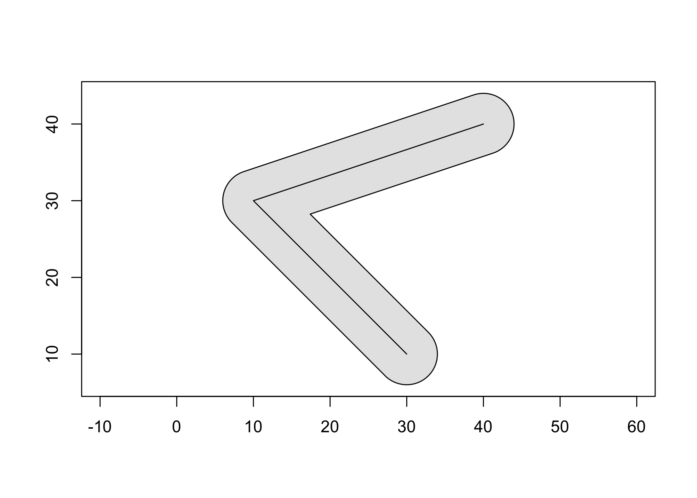

The goal of geom is to provide low-level access to the GEOS library, supporting several common input/output formats to facilitate geoprocessing in R. This package tries to solve the “hard” problems associated with wrapping a C/C++ library, exposing an R API and a C++ API that can be used in dependency packages.
Installation
You can install the development version from GitHub with:
# install.packages("devtools") devtools::install_github("paleolimbot/geom")
If you can load the package, you’re good to go!
library(geom)
Example
Create a line, buffer it, and plot!
line <- geo_wkt("LINESTRING (30 10, 10 30, 40 40)") geo_plot(geos_buffer(line, width = 4), col = "grey90") geo_plot_add(line)
